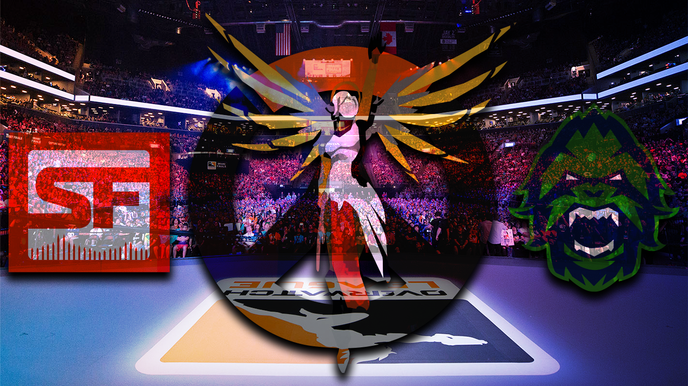

October 30, 2019
Project 3: Article Banner
These Butterflies Evolved to Eat Poison. How Could That Have Happened?
The focus of the article is to talk about how Monarch butterflies have the ability to eat a plant that is poisonous to other insects. I wanted to showcase the two most important factors in that which were the butterflies and the milkweed. First I created the illustrator image of the butterfly, then I loaded it into photoshop. I found a picture of the plant and used that as the background for the image. Next I layered the drawn butterflies on top of it. To give them more depth I soft lit the original butterly behind them, as well as giving them each a drop shadow. Finally I touched up the background a little bit to bring out the colors and make it more vibrant like the butterflies.
Overwatch League Fans: ‘This Game Is My Life'

My next article was about the finals of a video game playoffs. The title of the article talks about fans' love for the game so I wanted to use that love and the finalists as the main focus. For the love of the game aspect I used one of the most popular characters in the game on top of the logo and drew them both in illustrator. Next I put in into photoshop and wanted to make it look less flat like the butterflies. I used a similar tool and hard lit a picture of the fans in the stadium, as well as color burning it to make the colors pop. Then I went back into illustrator and drew in the logos of the final two teams and applied the same effects as the first drawing. I applied a gradient background that used some of the two teams' colors, but did not overpower the design. Finally, I put a drop shadow on the illustrations to give it more of a distance form the back and relate it more to the first design.
‘Steven Universe’ Evolves from 11-Minute Shorts to a 90-Minute Musical
Finally, I made a design for the Steven Universe movie. Since the article mostly talks about the show and movie development I wanted the banner to showcase more about the movie. I used key elements from the movie and created images for them in illustrator. Next I brought them into photoshop to apply the color burn and lighting affect like the last two, using another key aspect of the film, space. Afterwards I added the main scence as the background to tie the picture "plot" together. The last thing I did was paste in the movie logo and apply a drop shadow to it and the illustration like I had with the others.
September 25, 2019
Project 2: Website Icon
Drawing


The first set of icons I did was for drawing. Drawing is one of the things I enjoy to do most in my free time and felt it was a big factor in what makes me, me. I wanted to draw something that interested me so I used one of the ideas that I couldn't fit into an icon, fantasy. I handdrew out a fairy in my notebook then copied the image over to illustrator. After this I used the pen tool to get the shape and make adjustments that were needed. I wanted to pull up the image a bit so I added a thin black stroke, and then used a light background that fit in the theme.
Video Games


The second set of icons I did was for video games. I wanted to showcase one my favorite things about video games, watching good people play. I like to think that my friends and I are good, but then I watch the professionals play and I am in awe. To capture these teams I look the main aspects from two of my favorite team's logos. I used the blue crosses from New York Excell, and the Dragon from the Shanghai Dragons one. I combined those aspects together and layered them in a way that would be visually pleasing. Next I matched it with the drawing icon and added a background and some light stroking.
Friends


The final set of icons I did was for my friends. I wanted to showcase activities my friends and I do together. One of the first things I thought of was movies so I started witb the DVD base. Next I created a few icons from some of our favorite movies. I ended up choosing the one for the movie Iron Sky which is a Finish movie about alien Nazis who live on the moon, since this is one of our favorites. I layered the design on top of the DVD then cut the whole out through both of the designs. Finally, I added a stroke and a background to match the other two.
August 28, 2019
Project 1: Avatar

The project was to design an avatar the was in an isographic position. The avatar is modeled after myself, wearing sunglasses, my dyed hair color, boots. The other aspect was to include an object of something we enjoy, so I decided to include a video game controller.